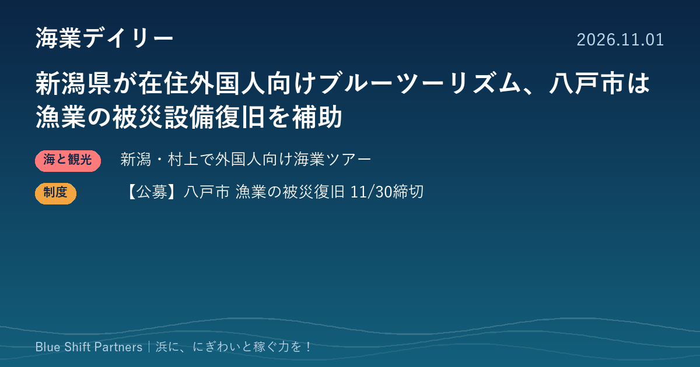

2026.11.01
新潟県が在住外国人向けブルーツーリズム、八戸市は漁業の被災設備復旧を補助

新潟県が村上地域で、国内在住の外国人を対象にした海業のモニターツアーを実施しています。青森県八戸市では、地震で被災した漁業者などの設備・機器の復旧を支える補助金の第3次募集が11月30日まで行われています。
新潟県、村上地域で国内在住外国人向けのブルーツーリズム・モニターツアー
新潟県農林水産部水産課は、国内在住の外国人を対象としたブルーツーリズムのモニターツアーを、10月31日から11月1日まで村上市内で実施しています。定置網の水揚げ・荷捌きの見学、刺身や干物づくりの魚捌き体験、漁業者による地元水産物の解説、観光汽船での粟島・笹川流れ見学などを組み合わせた内容です。海業を地域の観光資源と一体でPRし、インバウンドを含む多様なニーズに応えるビジネスモデルづくりを目的としており、県は令和7年度に佐渡地域でも海業のモニターツアーを行っています。
ここがポイント：水揚げ見学や魚捌き体験を、まちあるきや宿泊と組み合わせて「商品」に仕立てる試みです。外国人の反応をモニターで確かめてから本格展開する進め方は、体験メニューを検討している漁協や自治体にとって参考になります。
出典：新潟県 農林水産部水産課「国内在住外国人を対象としたブルーツーリズムモニターツアーを開催します」（報道資料）（2026-10-27）
【公募】八戸市 なりわい再建被災資産復旧事業補助金（農林水産業・第3次） 11/30まで
青森県八戸市は、令和7年青森県東方沖地震、令和8年三陸沖地震、令和8年岩手県沖地震で被災した農林水産業の事業者を対象に、中小企業なりわい再建被災資産復旧事業補助金の第3次募集を行っています。対象は市内で被災した資産を復旧して事業を再開する中小企業者、漁業協同組合などで、建物を除く施設（構築物・附属設備）と設備（機械・器具・備品）の修繕や取り替えにかかる経費が対象です。補助率は3分の2以内、上限1,000万円・下限10万円（予算の範囲内で減額の可能性あり）で、募集期間は10月30日から11月30日までです。申請先は市農林水産部の担当課または水産事務所で、郵送やメールでの提出が案内されています。
ここがポイント：被災した冷蔵設備や加工機械、漁具の保管設備などの復旧に充てられる制度です。八戸市内で被災した漁業者・漁協・水産関係の事業者は、締切まで1か月を切っているため早めの確認をおすすめします。
出典：八戸市「中小企業なりわい再建被災資産復旧事業補助金（農林水産業）について」（2026-10-27）
新潟県の取り組みは、水揚げ見学や魚捌きといった浜の日常を、宿泊やまちあるきとつないで観光の商品にしようとするものです。いきなり本格的に始めるのではなく、モニターツアーで参加者の反応を確かめてから値付けや運営を固める進め方は、体験事業を考えている浜でも取り入れやすい手順です。被災地の復旧補助のように締切のある制度は、気づいたときには期限が迫っていることが多いので、身近な方への声かけもお願いします。